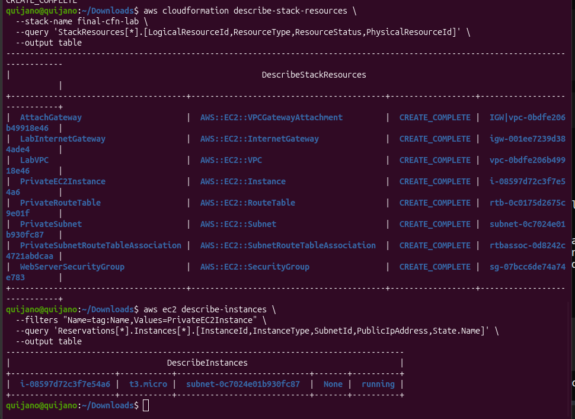

Single Template
One YAML file declares 8 resources (VPC, IGW, attachment, subnet, route table, association, security group, EC2) plus 5 outputs.
Challenge lab without guided steps. A single CloudFormation YAML template provisions a complete
network stack: VPC, internet gateway, private subnet, route table, security group, and a
t3.micro EC2 instance launched without a public IP. The full deployment is driven
from the AWS CLI.
A challenge lab: the manual lists the required components and the constraint
(EC2 in a private subnet, no SSH access needed), but it does not
dictate how to build the template. The full solution lives in one YAML file deployed via
aws cloudformation create-stack.
One YAML file declares 8 resources (VPC, IGW, attachment, subnet, route table, association, security group, EC2) plus 5 outputs.
Deployed to us-west-2 as stack final-cfn-lab. Final status:
CREATE_COMPLETE.
The EC2 launched with PublicIpAddress: None — proving the private subnet
constraint is satisfied.
One YAML file describes the full stack. Each block below is explained by its purpose, not
line by line — CloudFormation reads top to bottom and CloudFormation alone decides the order
based on the dependency graph (!Ref, DependsOn).
AWSTemplateFormatVersion: '2010-09-09'
Description: CloudFormation template to create a VPC, internet gateway, private subnet, security group, and EC2 instance.
Parameters:
LatestAmiId:
Type: AWS::SSM::Parameter::Value<AWS::EC2::Image::Id>
Default: /aws/service/ami-amazon-linux-latest/amzn2-ami-hvm-x86_64-gp2
Resources:
LabVPC:
Type: AWS::EC2::VPC
Properties:
CidrBlock: 10.10.0.0/16
EnableDnsSupport: true
EnableDnsHostnames: true
Tags:
- Key: Name
Value: LabVPC
LabInternetGateway:
Type: AWS::EC2::InternetGateway
Properties:
Tags:
- Key: Name
Value: LabInternetGateway
AttachGateway:
Type: AWS::EC2::VPCGatewayAttachment
Properties:
VpcId: !Ref LabVPC
InternetGatewayId: !Ref LabInternetGateway
PrivateSubnet:
Type: AWS::EC2::Subnet
Properties:
VpcId: !Ref LabVPC
CidrBlock: 10.10.1.0/24
AvailabilityZone: !Select [0, !GetAZs '']
MapPublicIpOnLaunch: false
Tags:
- Key: Name
Value: PrivateSubnet
PrivateRouteTable:
Type: AWS::EC2::RouteTable
Properties:
VpcId: !Ref LabVPC
Tags:
- Key: Name
Value: PrivateRouteTable
PrivateSubnetRouteTableAssociation:
Type: AWS::EC2::SubnetRouteTableAssociation
Properties:
SubnetId: !Ref PrivateSubnet
RouteTableId: !Ref PrivateRouteTable
WebServerSecurityGroup:
Type: AWS::EC2::SecurityGroup
Properties:
GroupDescription: Allow SSH access from anywhere
VpcId: !Ref LabVPC
SecurityGroupIngress:
- IpProtocol: tcp
FromPort: 22
ToPort: 22
CidrIp: 0.0.0.0/0
Tags:
- Key: Name
Value: WebServerSecurityGroup
PrivateEC2Instance:
Type: AWS::EC2::Instance
Properties:
InstanceType: t3.micro
ImageId: !Ref LatestAmiId
SubnetId: !Ref PrivateSubnet
SecurityGroupIds:
- !Ref WebServerSecurityGroup
Tags:
- Key: Name
Value: PrivateEC2Instance
Outputs:
VPCId:
Description: Created VPC ID
Value: !Ref LabVPC
InternetGatewayId:
Description: Created internet gateway ID
Value: !Ref LabInternetGateway
PrivateSubnetId:
Description: Created private subnet ID
Value: !Ref PrivateSubnet
SecurityGroupId:
Description: Created security group ID
Value: !Ref WebServerSecurityGroup
EC2InstanceId:
Description: Created EC2 instance ID
Value: !Ref PrivateEC2Instance
Uses the special type AWS::SSM::Parameter::Value<AWS::EC2::Image::Id> to read
the latest Amazon Linux 2 AMI ID from SSM Parameter Store. This avoids hardcoding AMI IDs that
change every few weeks and break the template across regions.
VPC with CIDR 10.10.0.0/16. EnableDnsHostnames: true is required so
EC2 instances inside the VPC can receive DNS names — useful even when no public IP is assigned,
since AWS internal services rely on internal DNS.
The IGW is declared as a standalone resource, then attached to the VPC through a separate
AWS::EC2::VPCGatewayAttachment. This is the canonical pattern — declaring and
attaching are two distinct CloudFormation resources, which lets you detach without deleting
the gateway.
CIDR 10.10.1.0/24 placed in the first AZ via
!Select [0, !GetAZs ''] (portable across regions).
MapPublicIpOnLaunch: false guarantees instances launched here do not get a public
IP automatically — the first half of the "private" guarantee.
An empty route table is created and associated with the subnet. Crucially, no route to the IGW is added. This is the second half of the "private" guarantee: even though the IGW exists in the VPC, this subnet's traffic has no path to it.
Allows inbound SSH (port 22) from 0.0.0.0/0. The lab guide requires this rule even
though the EC2 cannot be reached from the internet (no public IP, no IGW route). The SG is
created as the declared posture, not as an actual access path.
t3.micro launched into PrivateSubnet with the SG attached.
ImageId resolves through the SSM parameter — the user never sees the AMI ID, AWS
substitutes the latest one at stack-create time.
Five IDs exported: VPC, IGW, subnet, security group, and EC2 instance. These show up under
Outputs in the console and can be referenced from other stacks via
!ImportValue if exports were declared.
PrivateRouteTable has zero routes pointing to it. Therefore traffic from the EC2
cannot reach 0.0.0.0/0 through the gateway. Adding a route
0.0.0.0/0 → LabInternetGateway would instantly convert this into a public subnet.
Everything runs from the terminal — no console clicks. Validation first, then create, then wait for completion before checking results.
Catch syntax errors before paying for any resource. validate-template
parses the file and checks YAML well-formedness plus basic property names.
aws cloudformation validate-template \
--template-body file://task1.yamlOne command triggers the entire provisioning pipeline. CloudFormation returns the stack ARN immediately and works in the background.
aws cloudformation create-stack \
--stack-name final-cfn-lab \
--template-body file://task1.yamlReturned StackId:
arn:aws:cloudformation:us-west-2:265659577547:stack/final-cfn-lab/cecf07c0-5056-11f1-b1f2-069c60ff0039wait blocks the terminal and polls every few seconds until the stack reaches
a terminal state. Exits cleanly on CREATE_COMPLETE; exits with an error on any
rollback state.
aws cloudformation wait stack-create-complete \
--stack-name final-cfn-labFinal status: CREATE_COMPLETE
Two CLI queries to prove the stack delivered what the challenge asked for: all 8 resources
created and the EC2 actually launched without a public IP. The
--query flag uses JMESPath to project the relevant columns and --output
table renders them readably in the terminal.
aws cloudformation describe-stack-resources \
--stack-name final-cfn-lab \
--query 'StackResources[*].[LogicalResourceId,ResourceType,ResourceStatus,PhysicalResourceId]' \
--output table| Logical ID | Resource Type | Status | Physical ID |
|---|---|---|---|
| LabVPC | AWS::EC2::VPC | CREATE_COMPLETE | vpc-0bdfe206b49918e46 |
| LabInternetGateway | AWS::EC2::InternetGateway | CREATE_COMPLETE | igw-001ee7239d384ade4 |
| AttachGateway | AWS::EC2::VPCGatewayAttachment | CREATE_COMPLETE | IGW|vpc-0bdfe206b49918e46 |
| PrivateSubnet | AWS::EC2::Subnet | CREATE_COMPLETE | subnet-0c7024e01b930fc87 |
| PrivateRouteTable | AWS::EC2::RouteTable | CREATE_COMPLETE | rtb-0c0175d2675c9e01f |
| PrivateSubnetRouteTableAssociation | AWS::EC2::SubnetRouteTableAssociation | CREATE_COMPLETE | rtbassoc-0d8242c4721abdcaa |
| WebServerSecurityGroup | AWS::EC2::SecurityGroup | CREATE_COMPLETE | sg-07bcc6de74a74e783 |
| PrivateEC2Instance | AWS::EC2::Instance | CREATE_COMPLETE | i-08597d72c3f7e54a6 |
Filter by the instance tag and project only the fields needed to prove the private placement.
aws ec2 describe-instances \
--filters "Name=tag:Name,Values=PrivateEC2Instance" \
--query 'Reservations[*].Instances[*].[InstanceId,InstanceType,SubnetId,PublicIpAddress,State.Name]' \
--output table| InstanceId | InstanceType | SubnetId | PublicIpAddress | State |
|---|---|---|---|---|
| i-08597d72c3f7e54a6 | t3.micro | subnet-0c7024e01b930fc87 | None | running |
PublicIpAddress: None confirms the instance
launched without a public IP. The subnet ID matches the one created by the stack, and the state
is running — the template delivered a working, private EC2 in a single deploy.

AWS::SSM::Parameter::Value<AWS::EC2::Image::Id> to dynamically resolve the latest AMI.--query with JMESPath and --output table to project specific columns from AWS API responses.wait subcommand turns asynchronous stack creation into a blocking, scriptable operation.The challenge had no step-by-step guide — only a list of required components and one constraint. Writing one YAML template that produces the entire infrastructure, then driving the deploy from the CLI, demonstrates the actual Infrastructure as Code mindset: describe the desired state once, let CloudFormation resolve the dependency graph, and verify with queries instead of console clicks.
The most useful nuance was realizing that an IGW attached to a VPC is harmless on its own.
Subnets become public only when their route table points 0.0.0.0/0 at the
gateway — a single missing route is the difference between a private workload and a
publicly reachable one.